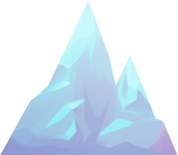
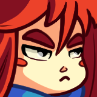

A daily Celeste guessing game
Next climb in

Hey everyone!
Celestedle now opens like Celeste itself:
The sky follows your time of day, and the old look is still there: Options, Modern game pages.
Thanks for climbing with me!
— Amélia / Ildyia

The game's server isn't answering right now, so your files and today's climbs can't be loaded.
Try again in a few minutes. If it lasts, please tell us on the Discord server!